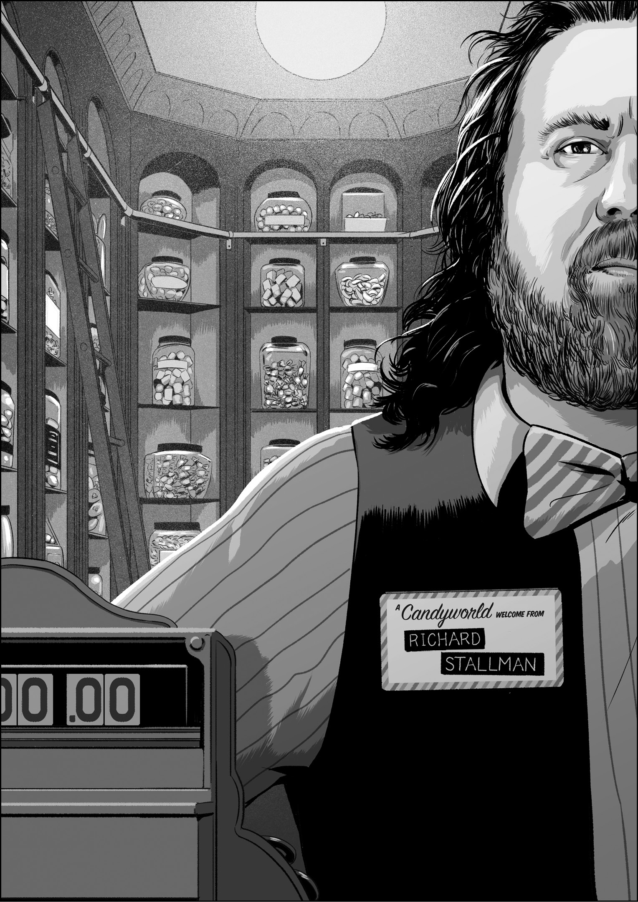
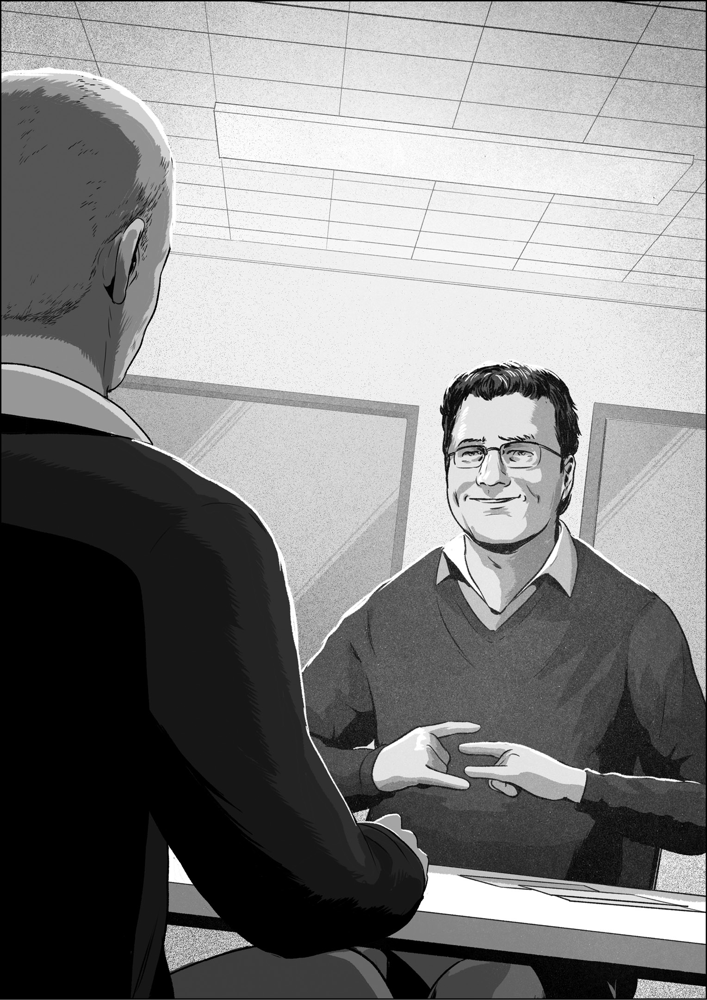
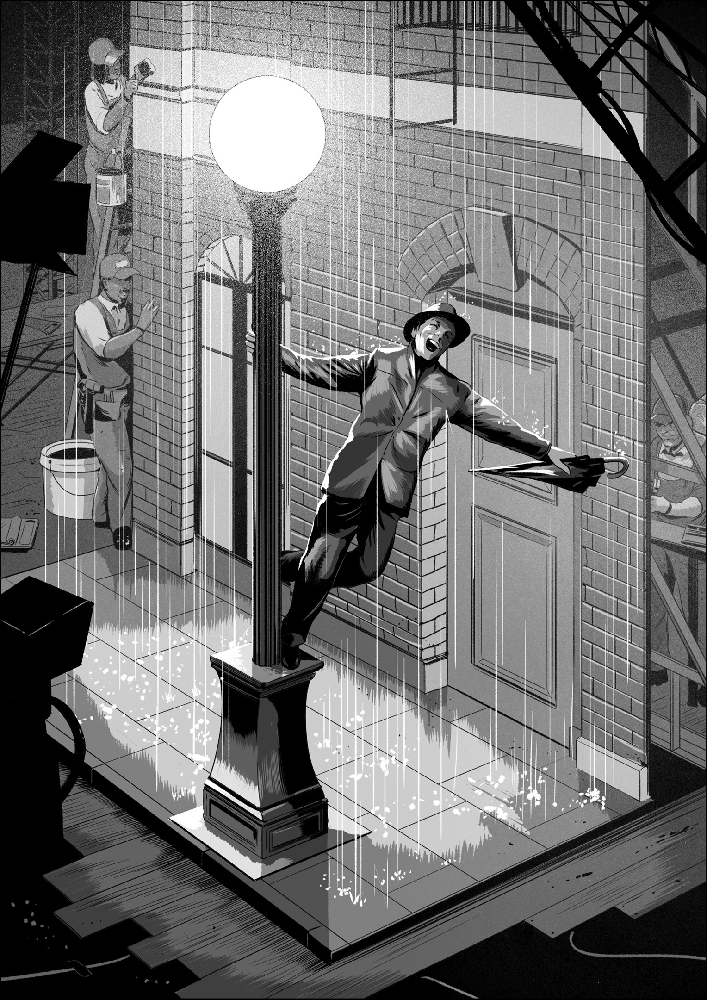

Demos were fundamental to our work at Apple. We used them to highlight the potential, explore the concepts, show the progress, prompt the discussion, and drive the decisions for making our products. I started to understand how demos could play all these roles in creative and technical work when I was surprised by a single brilliant demo during my first few weeks at Apple, a moment that gave me my first real view into how the company made its software.
This “crystal ball” demo was set in the technology landscape of the early 2000s, a time when dot-com boom startups were still in business, Microsoft was the undisputed leader in computing, the Netscape web browser was the hottest new technology, and Apple was an underdog.
It was also a time when many Silicon Valley software companies started experimenting with free software and plans for turning a profit by developing software they wouldn’t charge their customers to use. This seemingly paradoxical corporate strategy had its roots with Richard Stallman, a renowned programmer and technology activist, a man who believed all software should be free. Stallman railed against companies like Microsoft and Apple, which sold software for money, but kept the source code, the software instructions written by programmers, as a proprietary trade secret. In Stallman’s idiosyncratic belief system, mixing computer code and the profit motive formed a toxic brew whose ill effects compelled companies to hoard the intellectual effort required to write programs and turned software development into a zero-sum game that impeded the advance of technology to the detriment of the human race. If you’re not a programmer, free software might echo with sixties-style hippie idealism.
Yet I am a programmer, and for me, free software is more like the best candy store ever. If I picture myself as an entrepreneur with a dream of a new photo-sharing app, or a computer scientist researching artificial intelligence algorithms, or a system administrator trying to improve the utilization of the computers in my data center, I know I could go out on the internet and find existing code I could tailor for my own purpose. Free software made good solutions to common problems readily available, and in any of these scenarios, I could take advantage of free software as long as I allowed others to borrow from any code I wrote that was based on previously existing free software. Stallman positioned himself as the man behind the counter at the free software candy store, there not to ensure money changed hands but that the software source code would continue to change hands.

Stallman founded the GNU Project in 1983 to advocate for free software,1 and he wrote the General Public License (GPL) to advance his agenda. Stallman calls the GPL a “copyleft,” an intentionally contrasting reference to copyright, and rather than restricting the privileges of software users, the GPL expands them, guaranteeing that everyone can get no-cost access to software source code and can study it, modify it, use it as is, or treat it the basis of new projects. This sounds free indeed, but the GPL had its catch. If you wrote software based on code covered by the GPL, you were required to publish your software under the GPL as well. The expectation was that this would create a virtuous cycle in which coders were continuously building on each other’s efforts to the betterment of all, rich or poor, newbie or geek, programmer or end user.
If you don’t work in the software industry, Richard Stallman might be one of the most influential people you’ve never heard of. Over the decades, free software has spread through the entire high-tech industry. His GPL drives the development of the Linux operating system, and Linux is the core software running on Android smartphones, in the data centers for Google, Amazon, Twitter, and Facebook, and on the majority of network servers of all kinds. Without the long-term influence of Stallman’s ideas and all the free software inspired by them, the internet as we know it would not exist. There would likely be no web search engines, streaming music, or YouTube. No Wikipedia either. No chat apps. No social networks. No smartphones. The world would be a different place.
My life would be different too. Before coming to Apple, I had a job at a startup called Eazel. Our goal was to create an easy-to-use Linux system suitable for everyday computing, a free software alternative to Apple Macintosh and Microsoft Windows. The company was led by programmers who worked on the original Macintosh in the 1980s, including Bud Tribble, the first software manager for the Mac, and Andy Hertzfeld, the software wizard whose graphical user interface code helped to set the Mac apart from the text-mode personal computers that were the norm of the time. These fellows were my heroes, and I joined the company to work with them. The elegance and simplicity of their Mac software was my main inspiration for wanting to become a programmer.2
The inspiration for Eazel came from Andy, and his vision for the company was fueled by the free software movement—Andy identified with Stallman’s idealism—and by his concept of developing a file and icon manager that would make Linux a fitting competitor to Windows and the Mac, its more established rivals. Andy called this program Nautilus, and it would help Eazel users find files, read email, launch programs like word processors and spreadsheets, and perhaps do cool new things like keeping track of a few digital photos. Eazel contributed Nautilus to the GNOME project, a loosely confederated free software community whose members, both individuals and companies, would be providing the rest of the software for the desktop computing system we were trying to build.
To be a part of GNOME, Nautilus had to be licensed under the GPL. This had important implications for Eazel as a commercial entity. Since people would be able to download Nautilus for free once we finished it, the company had to figure out some other way to make money. Not surprisingly, this involved creating proprietary software that Eazel could charge people to use: a set of proto-cloud services, including automatic software updates and online file storage. These cloud services would live in an Eazel data center and would not be free. The idea was to integrate Nautilus with these services and position our no-cost software as a lure to draw people to Eazel’s pay-to-use features. The combination of dot-com fervor, enthusiasm over Linux and free software, abundant venture capital money, and our founders’ connection to the Mac made it seem to me that Eazel might be the next big thing.
If indeed we had that chance, we fumbled it. We never lived up to any of our lofty goals. Chief among our missteps was failing to conceive of our software as a single product instead of as a set of separate projects. We never figured out how to integrate the pieces. Nothing worked smoothly. Our software update feature was riddled with bugs that often broke programs while trying to update them. Our code to connect Nautilus to our cloud services didn’t work at all. The Nautilus team had persistent problems coordinating with GNOME—the loose structure and lack of profit motive of the free software community meant that they did not share our money-making goals or care to coordinate with us so we could meet our delivery schedules. All these setbacks caused delay after delay.
Several months into my stint at the company, these problems were becoming unavoidable, and our management went looking for help to whip our software into shape. One Friday afternoon, I sat in my office cubicle waiting to meet the man who might provide it. Earlier that week, I’d noticed “Don Moulton” scrawled on a piece of paper taped up in an empty cubicle near mine—he would be starting the following Monday as manager of the Nautilus project. That evening I met Don for the first time at one of our monthly shindigs. He promptly noted that some “knucklehead” had spelled his name wrong. He walked me over to his cube and scrawled over the scrawling: Don MELTON.
Don had some geek street cred, stemming from the several appearances he’d made in Code Rush, a documentary that aired on PBS.3 This film recounted the “browser wars,” the struggle between Netscape and Microsoft to control the early days of web surfing. As more and more people discovered the internet in the 1990s, Microsoft began to fear that computer users would change their technology habits, shifting money and influence to Netscape, the company that made the most popular web browser. Microsoft attempted to squish Netscape by bundling its own web browser, Internet Explorer, with its Windows operating system, then used on well over 90 percent of personal computers. Microsoft expected this move would cut off any opportunity for Netscape to cash in on the appeal and reach of its browser, reasoning that few people would go looking for a browser if they already had Internet Explorer preinstalled on their computer.
All of a sudden, Netscape needed a new strategy if it hoped to remain relevant in the web browser market it helped to create. As its countermove, Netscape decided to publish its browser source code, in the hope that the freely available code might become the de facto standard for all internet-enabled apps. If it did, this might lead to technical support contracts, consulting deals, and other ways of making money not directly tied to web browsers.
This “open source” strategy was a variation inspired by the free software movement but one Richard Stallman didn’t favor. Stallman wanted code to be free as a political and social good. His notion was for software to be “free as in freedom.”4 For Netscape, open source was an attempt to save the company from going under. It was making its source code “free as in beer.”5 The hope was to earn money by running the best beer bash.
History has shown this didn’t work, and while Netscape didn’t survive as a stand-alone company, it did ship the open source version of its browser code, christened with a new name: Mozilla. Mozilla had made it out the door with much thanks to Don, my new Eazel colleague, since he was responsible for purging all the dirty words from the source code before it was released.
That rude language was a hurdle Netscape needed to clear in its open-source initiative provides a peek into the inner workings of software development culture. Even as I write, but perhaps more so in the early 2000s, programmers are predominantly youngish men just a few years out of college, geeks who gulp caffeine to fuel long hours of coding, often against impossibly tight delivery schedules. When tired and short on time, tempers flare, immaturity clobbers professionalism, and disputes, technical or otherwise, come out in the software. Using the camel case scheme programmers often favor to mash together several words into one, a representative example of inappropriate language in source code might be:
cleanUpBobsSh_tStormHeIsAF__kingTurdBlossom();
Fearing that such bad language might harm the appeal of its software once the source was opened up and anyone could see it, Netscape management issued a decree: All the programming profanity would have to go. Cleaning up the code was a big task. Don was tapped to get it done, and he would say he was the goddamn perfect man for the job. He had a pretty foul mouth himself. He found and fixed up all the dirty language, but open source didn’t substantially improve Netscape’s fate in the browser wars. It lost.
As impending defeat was becoming clear, Don decided to look elsewhere for work. By the time he joined us at Eazel, software delays weren’t our only problem. Money was getting tight. Eazel had no products to sell, and our previous round of funding was running out. Our executives were busy trying to secure more investment, and for a while, they gave the Eazel staff updates every few weeks. Then they went quiet. Too quiet.
Fast forward a couple months: No venture capitalist had written a check, and on the same day Eazel shipped Nautilus 1.0, the company fired two-thirds of its staff. Don and I were in the smaller group who held on for three more months as our execs tried to sell the company outright, but to no avail.
Don and I were out of a job, but we had become friends, and when we weren’t strolling the fairways at several Silicon Valley golf courses, we looked for work. We soon heard that Apple was hiring. The Cupertino computer company held a job fair for former Eazel employees. I scored a couple of business cards from managers and planned to follow up. But Don, who was always more clever than me at pulling levers, had another idea. The next thing I knew, I had an interview with Scott Forstall, then the director of Platform Experience at Apple. In the days before iPods and iPhones, this was the department responsible for the Mac’s user interface, system apps like Finder and Mail, as well as the software frameworks that third-party developers used to make their own Mac programs.
When I arrived for my interview on the Apple campus, I found Scott sitting at his desk, which was angled into the far corner of his office. When I walked in, he swiveled around and leaned forward in his chair like a prizefighter waiting for the next round to begin. I sat knees to knees with him as we exchanged introductions. Since I had been worried ahead of time about my interviewing skills, I brought along a prop, my latest unemployed-guy software project, a jigsaw puzzle app that ran on Mac OS X, Apple’s brand-new operating system.
Scott tried my app, seemed to like it, and then peppered me with questions about my software with a speed and sting reminiscent of a youthful Muhammad Ali throwing a flurry of left-right combinations.
“How did you design the algorithm to make new puzzle pieces?”
“What technique did you use to make your animations so smooth?”
“Did you choose Cocoa or Carbon frameworks or some combination?”
The interview was a fast-paced blur, and I struggled to keep up. I later learned that Scott was always like this. You had to be on your guard, or his fusillade of questions might knock you off your feet.
A couple days later, Don and I drove over to the Computer Literacy bookshop in Sunnyvale—he said he wanted to pick up a book. I tried to get him to tell me about his interview at Apple and if he’d gotten any feedback about mine with Scott, but he stonewalled. When we left the store and got back in his car, Don handed me a copy of JavaScript: The Definitive Guide, 3rd Edition, notable for the beautifully detailed rhinoceros on its cover.6
He said, “What do you think about making a web browser for Apple? Are you interested?”
I was.
But wait a minute. Didn’t Mac OS X have a web browser? Yes, it did. Microsoft Internet Explorer. A deal between Apple and Microsoft had brought Internet Explorer to the Mac four years earlier. Steve Jobs announced this arrangement in August 1997, on the same day he invited Bill Gates to appear by video feed during his keynote at the Macworld Expo held in Boston.7 On that day, Gates pledged Microsoft’s support for Apple, committed to ship Office for Mac for five years, invested $150 million in Apple, and agreed to furnish Internet Explorer to Apple as the default web browser on the Mac. Except for the unfortunate optics of a twenty-foot-high Bill Gates looming over a Mac conference hall like Big Brother, it was a good deal for Apple, a welcome vote of confidence at a time when many were predicting the company’s impending doom. A few months earlier, Wired had published its famous cover image of the multicolor Apple logo encircled by barbed wire. A one-word caption below read: Pray.8
By the summer of 2001, Apple was on firmer footing, buoyed by the completion of Mac OS X, the success of the iMac, and the (secret) hopes for the iPod, which would be released four months later.
Steve and Scott were keen to keep this momentum going, and since they believed the internet would be an important part of the future of computing, communication, and commerce, they wanted Apple to control its own destiny in this burgeoning technology domain. They wanted the flexibility to improve the company’s internet software at will, and having an in-house browser was the first step in this strategy. They slated Microsoft Internet Explorer for replacement.
On the day Don and I joined Apple, this browser replacement initiative became our job. It involved two interlocking goals. First, make a web browser app. Second, create a web technology toolkit that would make it easy for Apple’s third-party software developers to incorporate web features into their software, from downloading text and images to displaying entire web pages. Simple to say, and indeed, web browsers do seem simple from the point of view of using one to surf the web.
From the perspective of a programmer, web browsers are fiendishly complicated. Since I had never worked on one before, Don held a mini boot camp to bring me up to speed. During our 7 a.m. coffee runs to the on-campus café every day, he’d run through a web browser’s major subsystems: content (text and images), styling (fonts, colors, and placement), and scripting (dynamic behaviors like checking a form before you submit it). He told me about the alphabet soup of published standards to cover these respective technical areas: Hypertext Markup Language (HTML), Cascading Style Sheets (CSS), and the JavaScript programming language. He also described how these software pieces fit together to produce complex web pages.
As I listened and learned, it seemed like making a browser would be a tall order for two people, especially when Don mentioned the large teams Netscape had working on its browser. No doubt Microsoft had the same for Internet Explorer. We would be a team of two. How could we possibly compete?
Don told me not to worry. We had a trick up our sleeve. We wouldn’t be starting from scratch, as had been done at a web-browsing pioneer like Netscape. As a result of the free software movement and the browser wars, Netscape had published its source code for Mozilla. This meant Don and I could turn to open source. We could download and evaluate the software at any level of detail we desired, and the Mozilla license meant we could borrow their code for our project.
Several other open source web browser projects were available on the internet, and we put investigations of these other projects on our to-do list. There were a couple commercially available options to assess as well. Even with these due diligence plans, Mozilla was our leading candidate right away, mostly because of Don’s connection to that code. He expressed confidence we could leverage the work of those big teams at Netscape. Yet as we talked, I realized that Don had a love/hate relationship with Mozilla. On the upside, Mozilla represented a huge investment in web technology, so we could use it to avoid having to reinvent the wheel at Apple. The downside was that the source code base was hard to work with because it was huge, many times larger than the software Don and I had collaborated on at Eazel. Given Don’s technical introduction sessions, I just accepted that web browsers needed to be super-big programming projects, and I got used to the idea that I’d need to understand all this new code.
Indeed, when I downloaded Mozilla from the internet, my first impression of the source code was its sheer size—close to a million and a half lines. I had never before worked on a project even a quarter as large. Printed at thirty lines to a page, the Mozilla code would fill fifty thousand pages. Imagine being compelled to read a stack of books that tall and then submit to an exam that might ask about any arbitrary line.
Regardless, that was the job, and I figured I’d better start studying. I moved in for a closer look at the software, but I immediately hit a roadblock. Mozilla wouldn’t “build” on Mac OS X, meaning that while I had all the programming source code for the Mozilla browser, when I tried to turn the code into an app that would run on Apple’s three-month-old operating system, it wouldn’t work. Apparently, nobody knowledgeable with Mozilla had ever tried. The Mac’s paltry market share was biting us. I searched the internet for help, but I didn’t find anything useful, and since our project was a secret, I couldn’t post questions to online message boards, as programmers often do, or even ask any of my new colleagues inside Apple. After a few days of build failures, I declared myself stuck.
I had been reporting my lack of progress to Don, who had been spending his time in secret negotiations with closed source vendors who might be willing to license their browser code to Apple. Don still preferred Mozilla, an open source solution, mostly because he believed free software would be an easier “sell” to our management than the multimillion-dollar price tag on the commercial alternatives.
Meanwhile, the higher-ups at Apple were eagerly awaiting for word from us, a recommendation, a sign of progress, something to show we were making headway. I would later find out that Scott was beginning to have his doubts about us. I’m glad I didn’t know, because after a month of treading water, I was already starting to feel the pressure on my own.
Don and I huddled. He said he was going out for a week of vacation he’d planned before we got to Apple. He wanted me to spend the week holed up in an all-out effort to build Mozilla on Mac OS X.
I dug in. I took meticulous notes. I spent long hours with the code. When Don got back to the office, I handed him a document entitled Building the Lizard: Fifty Steps to Get Mozilla Running on Mac OS X.
Each step was critical. Some steps seemed whacko, especially the one, about halfway down the list, to rebuild a piece of my programming environment, the C language library, a requirement that was the software equivalent of a brain transplant. It made Building the Lizard seem less like a technical document and more like a diabolical script from a low-budget monster movie.
The good news was that these steps worked . . . sort of. By following the directions, I could produce a web browser program icon on my desktop. The bad news was that this Frankenstein version of an app wasn’t alive. When I double-clicked this icon with my mouse, Mozilla launched, but it wouldn’t load web pages—whenever I tried, the browser promptly crashed. As I set out to investigate, I became hopelessly tangled in the million-plus lines of source code.
While we were conducting these browser evaluations, we were also trying to hire other people to join the team. We’d been approved to hire a couple more programmers, and even before our official Apple start date, we had spent time recruiting. Don knew several people from Netscape with browser-building experience, we knew some excellent engineers from Eazel who still hadn’t decided on their next job, and we got a couple leads on Apple-internal candidates. We faced a new challenge too: trying to convince people who had good alternatives to take a job on a project that we couldn’t tell them about. Don’s approach was a wink combined with assurance that it was a “big job.” Everyone turned us down. The ones with previous experience at Netscape took the unstated hint from Don, and none wanted any part of making another browser. My recent difficulties with Mozilla gave me an inkling about why they felt that way.
Now, in the midst of my efforts to tame Mozilla, I met another candidate. Richard Williamson began by telling me that he knew how to get results fast. In his British-accented English, tempered by two decades in the United States, he told me about himself. He had started his own software company when in his early teens, attended Swarthmore for a couple years, then paused his studies to work a year at NeXT, Steve Jobs’s inter-Apple software company. After returning to NeXT upon graduating, he sometimes fielded requests directly from The Man, like the time Steve sent him to Japan to negotiate with a partner to build an add-on networking card for NeXT computers, which he did successfully.
Richard delivered every word with confidence, and he seemed to have the experience to back it up. He and I were the same age, but I’d been playing computer games at the time he founded his first software company. In his early twenties, he’d brokered a multinational deal for NeXT in Japan. I was in the country too, teaching English, just another long-haired guy with a recently minted college degree and a duffel bag.
But was Richard for real, or was he just a smooth talker? As I tried to decide, I asked him about specific technical problems he faced and how he tackled them. Each time he recounted another quick-to-find solution. I also noticed that he punctuated all his answers by sticking out the index finger and pinky on each hand at about shoulder width, tips pointed at each other. Then he’d bring his hands together, randomly rotating his forearms as he did so. When his hands meshed directly in front of him, he rotated his forearms again, but this time in sync with each other, evoking the image of a motor delivering power through a drive shaft and onto its wheels. After every question I asked, he’d do it again, as if to show me that, for him, creating software was as simple as this drive shaft gesture.
After the interview, I went to Don and told him I wasn’t sure what to make of Richard’s bold claims. Don said that Bertrand Serlet, Scott Forstall’s boss, had worked with Richard at NeXT and spoke very highly of him. Don had been impressed during their interview and wanted to hire him. But he respected my reservations, and he suggested I call Richard on the phone for another chat.
This follow-up call was just like our face-to-face interview. Richard gave the same confident answers, and I pictured him holding the phone to his ear with his shoulder so he could do the two-handed drive shaft gesture. When I hung up the phone, I still wasn’t sure, but I had no concrete objections, so I gave Don my thumbs-up. Richard would be the third member of our team.
Richard started at Apple during my second week struggling to make Mozilla do more than build, launch, and crash. On his first day, Don and I gave him a full update on everything we had done, our open source strategy, Don’s discussions with outside companies, a listing of the candidate browser source code options we had considered, our decision to focus on Mozilla, my Building the Lizard document, and the bolts-protruding-from-the-neck, crash-prone hulk of a browser produced by following those steps.
Richard asked, “How long have you guys been working on this browser project?” His tone indicated that he wasn’t impressed.
Don answered, “Six weeks.”

Richard scrunched up his face in confusion at our lack of progress. He launched into a series of technical questions, delving into details. Was he trying to identify some valuable nugget we had missed? As we went on, it seemed Richard was too polite to ask the question really on his mind: “What on earth have you guys been doing?”
Later on, when Don and I had a chance to chat by ourselves, we concluded that Richard simply didn’t understand how hard this browser project was going to be. That would soon change. We agreed that we liked our new teammate, and we could look past any gruff behavior because it was accompanied by an eagerness to get going. We’d give Richard a week or so to get his computer and office set up, then we would talk to him about the project some more.
It didn’t take Richard that long to get settled in. Two days later, he called us over to take a look at a demo. A what? A demo?
Don and I walked into Richard’s dark, windowless office, a room lit only by the screen of his Mac. We looked over his shoulder as Richard clicked his mouse and launched a web browser. Not just the shell of one, but an actual functioning web browser. He proceeded to load web pages, click links, go back, click more links, load more pages, and generally surf the web like it was no big deal. What the hell were we looking at?
He explained that we were looking at Konqueror, one of the open source browsers we had told him about a couple days earlier. Konqueror had been developed by KDE, a programming community with goals similar to the GNOME project we’d favored at Eazel. KDE also was a full-featured computing environment, similar to Mac and Windows, a system built around the free software core of Linux.
Richard said he’d downloaded KDE and set himself a simple goal: Get the code running on the Mac as quickly as possible so he could evaluate the potential of the Konqueror web browser. Since KDE ran on Linux, not on Mac OS X, Richard told us he’d made a shim, a software translation layer that tricked the Konqueror browser into thinking it was running on a Linux computer, and then cajoled the computer into believing the browser was a program custom-tailored to the Mac. To be clear: Writing a shim like this is incredibly difficult. To have considered the task as less than an impassable technical roadblock was extraordinary. To see this shim working in just two days proved that Richard’s self-confidence was well founded. We were looking at a programming tour-de-force.
Sensing our wonder, Richard told us about the two shortcuts he’d taken to make his demo work. First, he’d used the Linux graphical system, X Windows, rather than Apple Core Graphics, the system native to Mac OS X. Second, he was running the entire KDE system, not just the Konqueror web browser. Even if these items might sound like technical mumbo jumbo to you, they didn’t to us, and as Richard described his work further, Don and I began to see how these shortcuts had allowed him to get the Konqueror code up and running fast.
Richard didn’t worry that X Windows failed to integrate perfectly with the top-of-screen menu bar on the Mac or provide pixel-perfect font rendering, or that the full KDE system included a raft of software that was irrelevant to web browsing. Richard knew these technical details would need to be addressed down the road, but he also knew how unease about his shortcuts would melt away in the minds of the demo viewer as soon as he turned back to his computer and continued surfing the web in what looked very much like a Mac browser.
Indeed, the unease did melt away, and with his caveats disclosed, that was it. Just a shim, two clever shortcuts, and two days to produce a working browser demo. Richard’s quick results were evidence of a deep vein of potential in Konqueror, one we could explore, mine, and exploit.
Don and I had been working for six weeks on our new job of making a web browser for the Mac, but we still had no working code to show for it and no plan for how we would produce any. In a fraction of the time, Richard had downloaded a Linux web browser and had coaxed Konqueror into running on his Mac. His demo browser launched, it loaded web pages, it didn’t crash, and it performed smoothly. Don and I were amazed. If Richard had done his two-handed drive shaft gesture, I think I might have fainted.
How did Richard pull this off? Both Don and I were experienced engineers, and Don had spent years developing web browsers at Netscape, yet Richard’s demo caught us completely off guard.
Is it possible to understand his accomplishment better, to measure it, to quantify it? It’s tempting to cite Silicon Valley lore and call Richard a “10x programmer,” a super-productive software genius who can add value in multiples of mere mortals.9
Do such people exist? After all, such discontinuities between average and excellent are uncommon in everyday life. The person sitting at the next table in a coffee shop won’t be typing five hundred words per minute on his or her laptop keyboard while you sit at yours typing fifty. The physical world imposes hard limits. This remains true even at elite levels of human performance. No Olympic sprinter will ever cover the 100 meters in less than one second.
Do these kinds of limits extend to technology development? In his 1975 software engineering classic, The Mythical Man Month, Frederick P. Brooks Jr. says that they do. Sharing the lessons he learned while managing the OS/360 mainframe operating system project at IBM in the 1960s, Brooks offers this observation: “When a task cannot be partitioned because of sequential constraints, the application of more effort has no effect on the schedule. The bearing of a child takes nine months, no matter how many women are assigned.”10
But do these limits always apply in software development? In the large projects Brooks was speaking about, where teams of hundreds or thousands are working against schedules and initiatives with mutual dependencies, the size of the effort bounds the speed of the work, and the overhead of communication and coordination swamps the impact of individuals, even the geniuses.
However, in the early phase of software development, it’s possible to shake free of these restrictions, especially when teams are small and the hunt for ideas is still on. This was the scenario when Richard joined us at Apple. We were still looking for an organizing concept to kick-start our web browser effort, and Richard showed us how. Not only that, he proved that a 10x productivity gap is a conservative upper limit on the possible in early stage software. Indeed, Richard did more to move our project ahead in two person-days of work than Don and I had done in the preceding twelve person-weeks. That’s more like a 30x gap.
What can explain this difference? On the surface, much appears to hinge on Richard’s programming feat, his software shim. Otherwise, his effort with Konqueror seems much like my struggles with Mozilla. Perhaps he was just a better programmer than me, and without his coding cleverness, there would be no story.
That explanation is too simple. Richard made his shim only after determining he needed one last link in a chain of inspiration, intuition, reasoning, and estimation. His shim was a consequence of his overall plan. To show what I mean, here’s an accounting of what Richard did in his first couple of days at Apple.
He began by quizzing us on the browser analysis we had done before his arrival, and after hearing it, he quickly discarded our effort with Mozilla as unlikely to bear fruit. By doing so, he demonstrated the self-confidence to skip any ingratiating display of deference to his new manager, a person who had years of experience in the technical field he was newly entering. Next, Richard resolved to produce a result on the shortest possible schedule. He downloaded an open source project that held genuine promise, the Konqueror code from KDE, a browser that might well serve as the basis for our long-term effort. In getting this code running on a Mac, he decided to make the closest possible approximation of a real browser that was feasible on his short schedule. He identified three features—loading web pages, clicking links, and going back to previous pages. He reasoned these alone would be sufficiently compelling proofs of concept. He then made his shortcuts, and these simplifying choices defined a set of nongoals: Perfect font rendering would be cast aside, as would full integration with the Mac’s native graphics system, same for using only the minimum source code from KDE. He reasoned that these shortcuts, while significant, would not substantially detract from the impact of seeing a browser surf web pages. He resolved to draw together these strands into a single demo that would show the potential of Konqueror. Then, finally, he worked through the technical details, which led him to develop his software shim, since that was the only thing standing between him and the realization of his plan. His thought process amplified his technical acumen.
In contrast, Don and I were hoping Mozilla would pan out somehow. I was trying to get the open source behemoth to build on the Mac, with little thought beyond that. I had no comparable plan, goals, nongoals, tight schedule, or technical shortcuts.
More than anything, this difference in thinking led to the difference in our outcomes. It’s not that Don and I were in a temporary rut either. Our approach at Apple was much similar to the one we used at Eazel, where we never had any idea whether we were on track to deliver an excellent desktop-plus-proto-cloud service for the simple reason that we were never able to try out our software in an integrated form until days before our company ran out of money and laid off most of its staff. At Eazel, we had never considered anything like the quick get-it-done schemes Richard just showed us.
If Don and I had continued working in the Eazel way at Apple, who knows when we would have had a demo to show? At that point in our careers, we simply didn’t know how to bootstrap a big project and set it on a course for success.
Richard did. His demo was the lynchpin. He showed us that the Konqueror web browser could work on the Mac. He cut corners to highlight the potential of this code. Of course, Richard’s brilliant software shim made his breakthrough possible, but consider the conceptual framework he’d built around his plan and how he’d cornered all the difficulties of making a browser demo so that one piece of custom programming, his shim, was all that was left to close the circle. The cumulative effect created the illusion of a real browser even when only showing an incomplete portion of one.
And it worked. When Don and I saw this demo, it was as if Richard had called us into his office, set a crystal ball down on the table, waved his hand over it, and showed us a vision for the future of our web browser project, one that pointed the way to make the vision real.
Richard’s demo also points to some general lessons, and to describe what they are, I’ll turn to an industry with a long history of using simplifying choices and corner cutting—some of the same tricks Richard used in his demo—to make us see things that aren’t really there.
Consider Hollywood backlots, the semipermanent outdoor locations movie studios maintain on their properties, the sidewalks, alleyways, and main streets that filmmakers employ as settings for their stories. Especially in decades past, before expensive location shoots and computer-aided special effects became common, backlots were essential. Even on a shoestring budget, a backlot could transform a scene. However, for the illusion to be convincing to moviegoers, we must see the correct amount of replicated reality onscreen.
One of my favorite backlot scenes is from Singin’ in the Rain, the 1952 Metro-Goldwyn-Mayer musical starring Gene Kelly and Debbie Reynolds. Take the eponymous dance number in the film—where Gene Kelly jubilantly taps, jumps, splashes, and spins his way through the pouring rain after he kisses Debbie Reynolds good night on the doorstep of her apartment. This scene is set on a Hollywood backlot intended to look like a city street. Immediately before Kelly dunks himself under a gushing downspout draining water from the roofs of the “buildings” he is dancing past, he skips past La Valle Millinery Shop, an enticing-looking storefront with several fashionable women’s hats on display. Of course, this wasn’t a real shop. The storefront might have been a cobbled-together flat with nothing behind it, or there might have been a studio office through the “shop” door, perhaps for an MGM bookkeeper or clerk. We don’t care. We’re too charmed by the singing and dancing. Compare this fake hat shop with another prop seen earlier in the number, when Kelly jumps up on a lamppost on the edge of the sidewalk. Unlike the hat shop, that lamppost prop needed to be real, or at least real enough to support the actor’s weight. Were other lampposts on the backlot similarly well built? We don’t know, but again, we don’t care. Maybe they were, and maybe they weren’t, but the set designers needed to make sure that one specific lamppost was sufficiently sturdy for the movie’s lead character to leap up onto it. It had to be built well because the choreography called for it.

In the same way, software demos need to be convincing enough to explore an idea, to communicate a step toward making a product, even though the demo is not the product itself. Like the movie, demos should be specifically choreographed, so it’s clear what must be included and what can be left out. Those things that aren’t the main focus of a demo, but are required to create the proper setting, must be realized at the correct level of detail so they contribute to the whole rather than detract from the vision.
Richard put this theory into practice. He chose the Konqueror open source browser as the basis of his work, one of the candidates we might use for the actual product, and he ensured he could load web pages, click links, and go back. Those aspects were essential. The font rendering was not to Apple standards—some characters were jaggy rather than smooth—but text was legible enough, so Richard expended no more effort on typography. He spent no time at all on irrelevant details, like keyboard shortcuts or a beautifully designed app icon. He chose this combination of important/passable/ignorable features carefully to maximize impact, minimize distractions, and fit the work schedule he’d set for himself.
In the years since Richard showed me his browser demo, I’ve emulated his approach. When I make a demo, I think about the intended audience, and I make a specific decision about what features to include. I draw a conceptual ring around those key details, and I use a thick imaginary marker to do it. The demo points inside the ring are the focus, and like the lamppost in the movie scene, I depict them with the highest fidelity. I leave outside the ring other less important details that will eventually have to be addressed, but not immediately. I pay them as little attention as possible. Like the inside of the hat shop, I omit them from the demo if I can get away with it. I take extra care at the boundary. Some elements are right on the thick imaginary line, details that need some attention, since they help to set the scene and get my audience to suspend their disbelief. In the case of a preferences screen, a minor user interface element for an app still in early development, I might take a screenshot from the preferences of another app rather than implement a fully working user interface. This is similar to placing a few hat props in the shop window. I want my demo audience to think they’re looking at something real, even though they aren’t. I know the demo isn’t an actual product, and my audience knows it too, but creating the illusion of an actual product is essential during the development process to maintain the vision of what we’re actually trying to achieve, and so my colleagues can begin responding and giving feedback as if the demo was the product.
This attempt to build continuity throughout a development process suggests one final characteristic shared between backlot scenes and software demos—both are elements in larger narratives. Each advances its story. Gene Kelly’s dancing and singing in the rain expresses the joy of a first kiss, the moment in the film when the leading man and woman show us that they’ve fallen for each other. It was Hollywood movie magic at its best. Richard’s demo was the moment we saw the potential of the Konqueror open source code and decided it might be the answer we had been looking for. It was Silicon Valley software magic at its best.
Over time, Don and I began to understand and absorb the model Richard showed us. Look for ways to make quick progress. Watch for project stalls that might indicate a lack of potential. Cut corners to skip unnecessary effort. Remove distractions to focus attention where it needs to be. Start approximating your end goal as soon as possible. Maximize the impact of your most difficult effort. Combine inspiration, decisiveness, and craft to make demos.
We learned all this from Richard. He changed the way we worked.